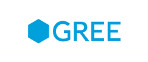
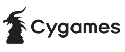
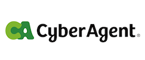
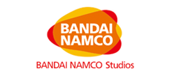
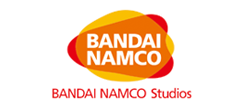
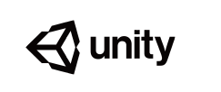
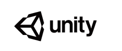
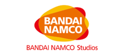
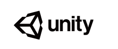

条件
1社あたり20万円
参加者へのアピールのため、上記金額に加えての様々な形でのご協力を歓迎いたします。例えば以下が考えられます。
- ナイトセッションの飲み物・つまみなどを現物提供したい。
- ナイトセッションの飲み物・つまみなどの費用を分担したい。（購入は運営委員会に一任）
- 夕食時の飲み物代を提供したい。
いずれもご協力いただいた旨を参加者に強力にアピールいたします。
ご協力の内容によっては、調整が必要となりますので開催間際の提案はお断りする場合があります。
メリット
スポンサー各社には、下記の権利が付与されます。
- 1社あたり最大 2 名、参加費無料（宿泊費、食事代含む）
- WISSサイトの、協賛企業一覧ページにおける企業ロゴ掲載
- WISS会議で配布する資料（プロシーディングス等）一覧への、企業紹介資料封入
- 協賛企業デモブースへの展示物設置と、説明員による説明やデモ（一般の発表デモ同様、3回あるデモセッションの中で、任意の1回での出展となります。どのデモセッションで展示するかについて要望がある場合はお早めにご連絡ください。また、会議中に、デモブースはライブ中継で会場全員に対する1分間のプレゼンテーション枠があります。）
- ご要望に応じ、ナイトセッションの枠を優先して確保できます。ただしナイトセッションはパラレルセッションであり、そのうちの1つになること。そのため、委員会として参加者へのアナウンスはしますが、集客数などのお約束はできないことはご承知おきください。
ご注意
サイトにおけるロゴ掲載場所など、詳細については WISS 運営委員会に一任をいただくこと、ご了承ください。
問い合わせ先
ご興味がある場合、下記の企業スポンサー担当にご連絡ください。 WISS2018 企業スポンサー担当 2018sponsor <at> wiss.org（<at>の部分は @ マークに変えてお読みください）
企業スポンサー（会社名五十音順）：募集締め切りました
- グリー株式会社
- 株式会社Cygames（Cygames Research)
- 株式会社サイバーエージェント（AI Lab)
- チームラボ株式会社
- TIS株式会社
- 株式会社 電通国際情報サービス
- 株式会社バンダイナムコスタジオ
- フューチャー株式会社
- 三菱電機株式会社
- 楽天株式会社 楽天技術研究所
- 株式会社LIFULL
- ユニティ・テクノロジーズ・ジャパン合同会社



 


 

